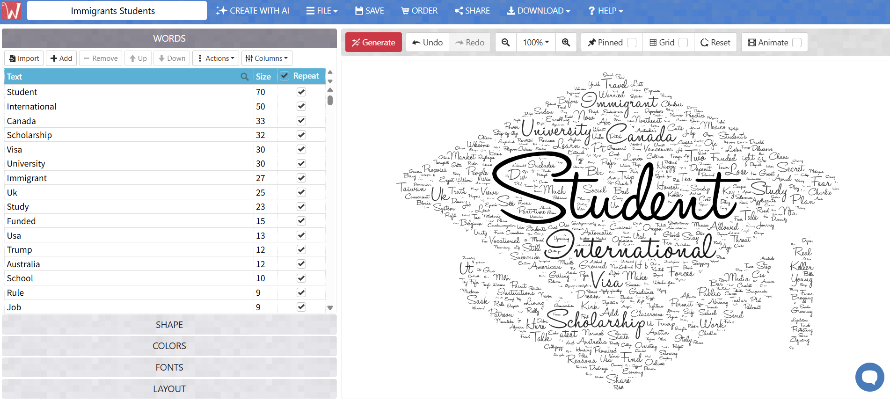

Configure the Query
The notebook defines a search term, target number of videos, scroll limits, and an output path on Google Drive.
YouTube Search Crawler
This workflow uses a Selenium crawler in Google Colab to collect rendered YouTube search results, save them as CSV files, and translate text patterns into word cloud visualizations.
Acknowledgment: this workflow was possible thanks to Dr. Bo Zhao's YouTube crawler code and teaching materials.
Process
The notebook defines a search term, target number of videos, scroll limits, and an output path on Google Drive.
Selenium launches headless Chrome because YouTube search results are rendered dynamically by JavaScript.
BeautifulSoup extracts video URL, title, channel, view count, relative upload time, description, and collection timestamp.
Results are saved as CSV files, then text fields are summarized through word clouds for comparison across the three queries.
Foldable Code
# Install Google Chrome and crawler libraries in Google Colab
!apt-get -qq update
!wget -q https://dl.google.com/linux/direct/google-chrome-stable_current_amd64.deb
!apt-get install -y ./google-chrome-stable_current_amd64.deb
!rm -f google-chrome-stable_current_amd64.deb
!pip install -q "selenium>=4.15" beautifulsoup4 pandas
!google-chrome --version# The notebook was reused three times with these search queries.
# Together, they capture three distinct aspects of migration.
QUERIES = [
"Climate Refugees",
"US Immigrants",
"Immigrants Students",
]
MAX_ITEMS = 200
MAX_SCROLLS = 30
SCROLL_PAUSE = 2.0
HEADLESS = True
# Example run. Change QUERY and OUTPUT_PATH for each dataset.
QUERY = "Immigrants Students"
OUTPUT_PATH = "/content/drive/MyDrive/GEOG 521: Critical GIS/Immigrants Students.csv"from selenium import webdriver
from selenium.webdriver.chrome.options import Options
def build_driver(headless=True):
opts = Options()
opts.binary_location = "/usr/bin/google-chrome"
if headless:
opts.add_argument("--headless=new")
opts.add_argument("--no-sandbox")
opts.add_argument("--disable-dev-shm-usage")
opts.add_argument("--disable-gpu")
opts.add_argument("--window-size=1280,1800")
opts.add_argument("--lang=en-US")
return webdriver.Chrome(options=opts)def parse_card(card):
title_tag = card.find("a", id="video-title")
if not title_tag or not title_tag.get("href"):
return None
channel_tag = card.find("a", class_=re.compile(r"yt-simple-endpoint.*yt-formatted-string"))
meta_tags = card.find_all("span", class_="inline-metadata-item style-scope ytd-video-meta-block")
desc_tag = card.find("yt-formatted-string",
class_="metadata-snippet-text style-scope ytd-video-renderer")
collected_at = datetime.now(timezone.utc)
view_raw = meta_tags[0].get_text(strip=True) if len(meta_tags) > 0 else None
created_raw = meta_tags[1].get_text(strip=True) if len(meta_tags) > 1 else None
return {
"video_url": "https://www.youtube.com" + title_tag["href"],
"title": title_tag.get("title") or title_tag.get_text(strip=True),
"username": channel_tag.get_text(strip=True) if channel_tag else None,
"view_num": parse_view_count(view_raw),
"created_at": parse_relative_time(created_raw, collected_at),
"shortdesc": desc_tag.get_text(" ", strip=True) if desc_tag else None,
"collected_at": collected_at,
}df = scrape_youtube_search(QUERY)
log.info("collected %d unique videos", len(df))
df.to_csv(OUTPUT_PATH, index=False)
log.info("saved %d rows to %s", len(df), OUTPUT_PATH)# Word clouds were created outside Python with WordArt.com.
# Core workflow:
# 1. Use title and shortdesc text from each crawler CSV.
# 2. Paste the cleaned text into WordArt.com.
# 3. Generate and export one PNG for each migration query.
Outputs

This query highlights migration in relation to climate pressure, environmental displacement, and vulnerability.

This query focuses on national immigration discourse, policy, border politics, and public narratives in the United States.

This query connects migration to education, belonging, school experience, and student life.